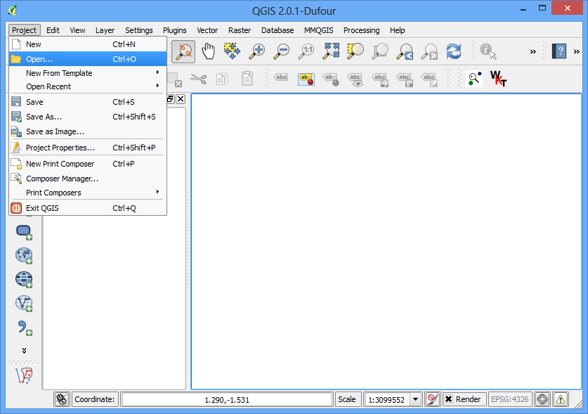
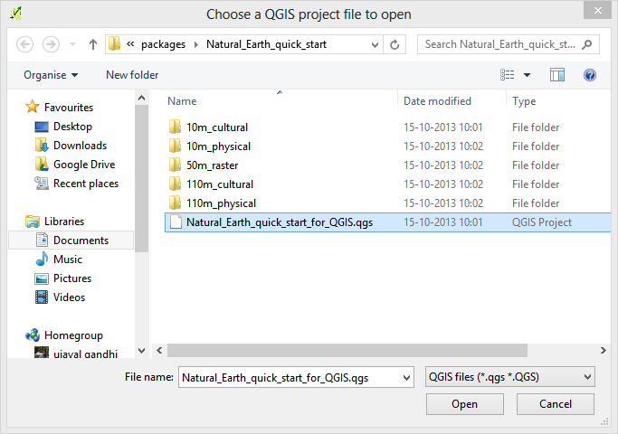
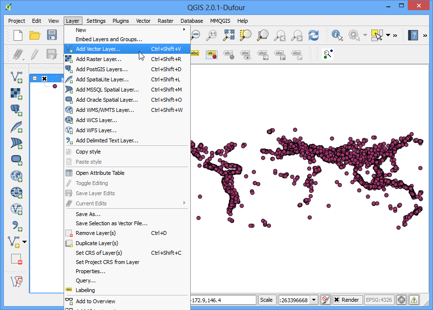
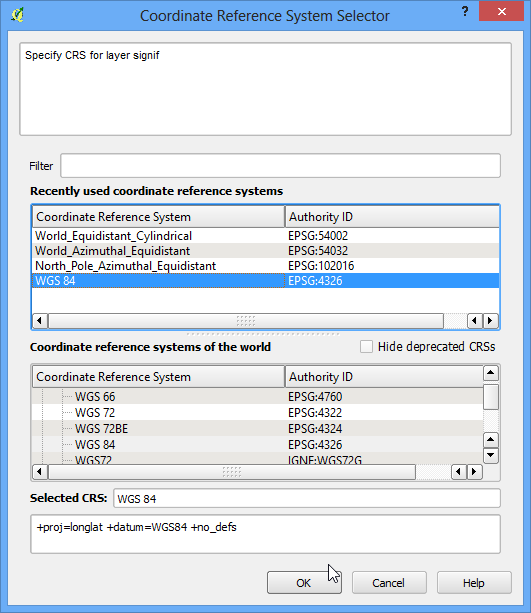
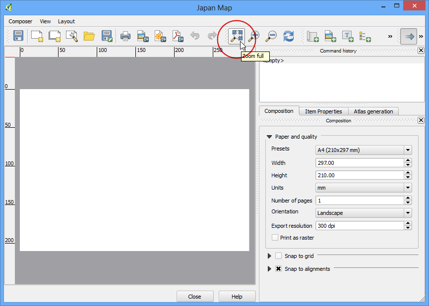
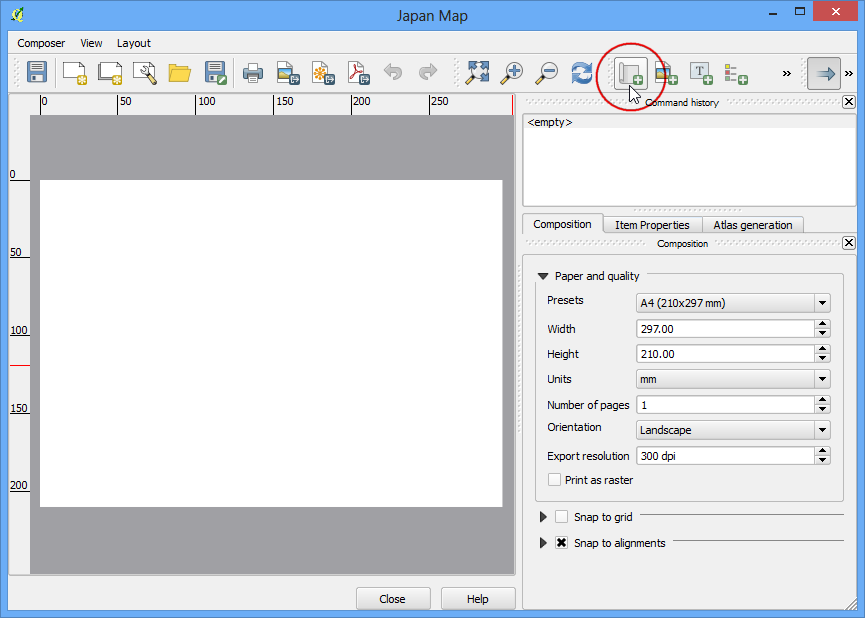
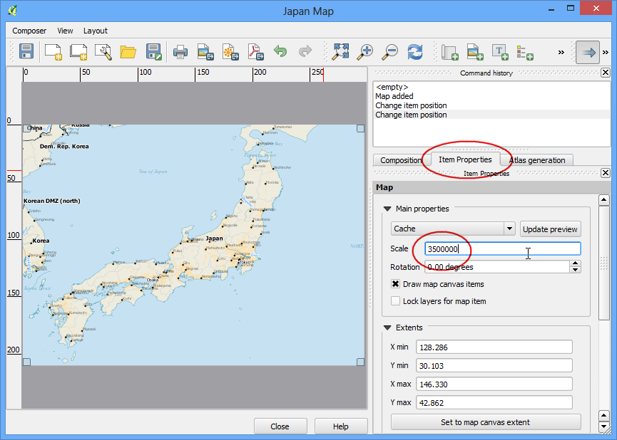

Getting Started With Python Programming
[ Download PDF A4 Letter ]
QGIS has a powerful programming interface that allows you to extend the core
functionality of the software as well as write scripts to automate your tasks.
QGIS supports the popular Python scripting language. Even if you are a
beginner, learning a little bit of Python and QGIS programming interface will
allow you to be much more productive in your work. This tutorial assumes no
prior programming knowledge and is intended to give an introduction to
python scripting in QGIS (PyQGIS).
Overview of the task
We will load a vector point layer representing all major airports and use
python scripting to create a text file with the airport name, airport code,
latitude and longitude for each of the airport in the layer.
Procedure
- In QGIS, go to . Browse to the
downloaded ne_10m_airports.zip file and click Open. Select
the ne_10m_airports.shp layer and click OK.

- You will see the ne_10m_airports layer loaded in QGIS.

- Select the Identify tool and click on any of the points to
examine the available attributes. You will see that the name of the airport
and it’s 3 digit code are contained in the attributes name and
iata_code respectively.

- QGIS provides a built-in console where you can type python commands and get
the result. This console is a great way to learn scripting and also to do
quick data processing. Open the Python Console by going to
.

- You will see a new panel open at the bottom of QGIS canvas. You will see a
prompt like >>> at the bottom where you can type commands. For
interacting with the QGIS environment, we must use the iface variable.
To access the currently active layer in QGIS, you can type the following and
press Enter. This command fetches the reference to the currently
loaded layer and stores it in the layer variable.
layer = iface.activeLayer()

- There is a handy function called dir() in python that shows you all
available methods for any object. This is useful when you are not sure
what functions are available for the object. Run the following command to
see what operations we can do on the layer variable.

- You will see a long list of available functions. For now, we will use a
function called getFeatures() which will gets you the reference to all
features of a layer. In our case, each feature will be a point representing
an airport. You can type the following command to iterate through each of the
features in the current layer. Make sure to add 2 spaces before typing the
second line.
for f in layer.getFeatures():
print f

- As you will see in the output, each line contains a reference to a feature
within the layer. The reference to the feature is stored in the f
variable. We can use the f variable to access the attributes of each
feature. Type the following to print the name and iata_code for each
airport feature.
for f in layer.getFeatures():
print f['name'], f['iata_code']

- So now you know how to programatically access the attribute of each feature
in a layer. Now, let’s see how we can access the coordinates of the feature.
The coordinates of a vector feature can be accessed by calling the
geometry() function. This function returns a geometry object that we can
store in the variable geom. You can run asPoint() function on the
geometry object to get the x and y coordinates of the point. If your feature
is a line or a polygon, you can use asPolyline() or asPolygon()
functions. Type the following code at the prompt and press Enter to see
the x and y coordinates of each feature.
for f in layer.getFeatures():
geom = f.geometry()
print geom.asPoint()

- What if we wanted to get only the x cordinate of the feature? You can
call the x() function on the point object and get its x coordinate.
for f in layer.getFeatures():
geom = f.geometry()
print geom.asPoint().x()

- Now we have all the pieces that we can stitch together to generate our
desired output. Type the following code to print the name, iata_code,
latitude and longitude of each of the airport features. The %s and
%f notations are ways to format a string and number variables.
for f in layer.getFeatures():
geom = f.geometry()
print '%s, %s, %f, %f' % (f['name'], f['iata_code'],
geom.asPoint().y(), geom.asPoint().x())

- You can see the output printed on the console. A more useful way to store
the output would be in a file. You can type the following code to create a
file and write the output there. Replace the file path with a path on your
own system. Note that we add \n at the end of our line formatting. This
is to add a newline after we add the data for each feature. You should also
note the unicode_line = line.encode('utf-8') line. Since our layer
contains some features with unicode characters, we can’t simply write it to
a text file. We encode the text using the UTF-8 encoding and then write to
the text file.
output_file = open('c:/Users/Ujaval/Desktop/airports.txt', 'w')
for f in layer.getFeatures():
geom = f.geometry()
line = '%s, %s, %f, %f\n' % (f['name'], f['iata_code'],
geom.asPoint().y(), geom.asPoint().x())
unicode_line = line.encode('utf-8')
output_file.write(unicode_line)
output_file.close()

- You can go to the output file location you specified and open the text file.
You will see the data from the airports shapefile that we extracted using
python scripting.